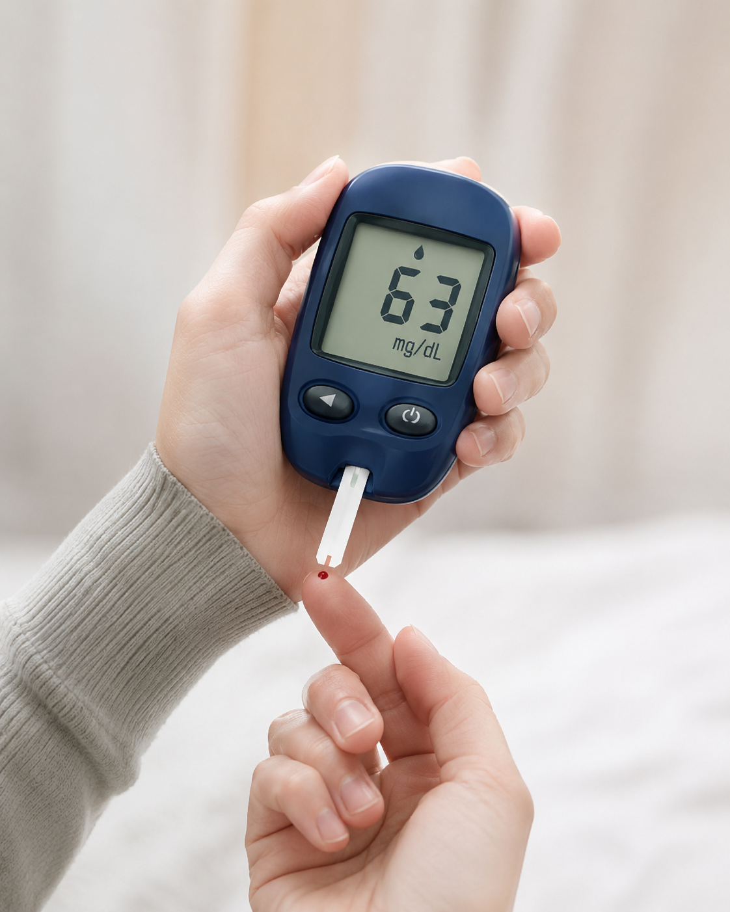
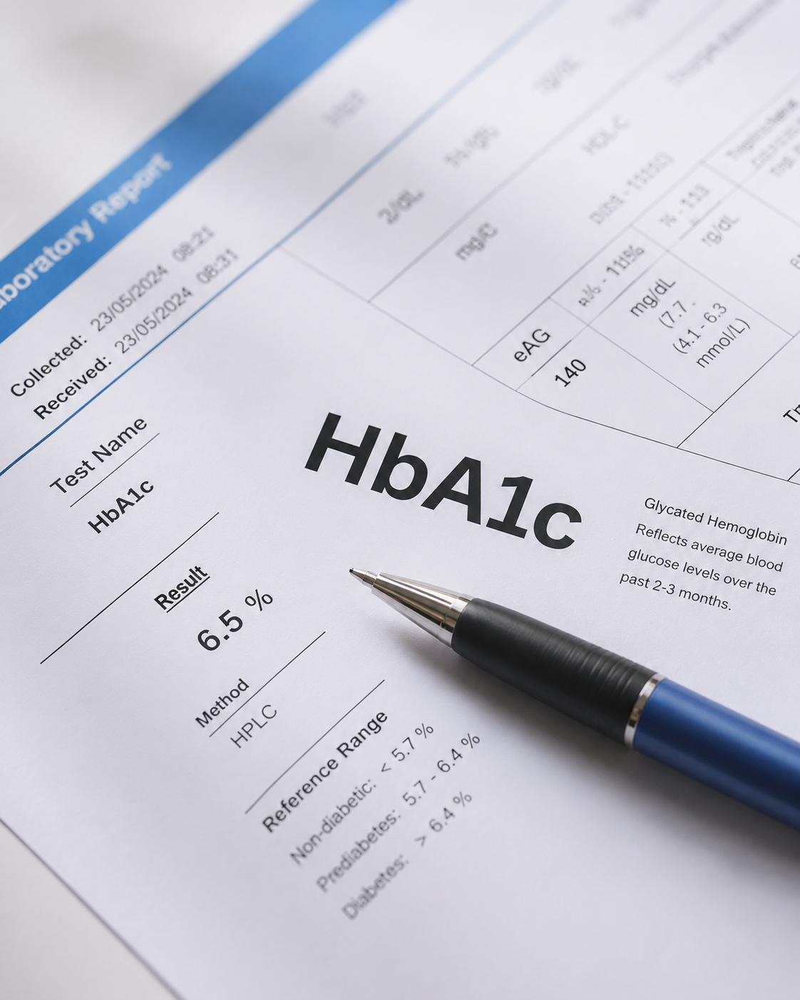
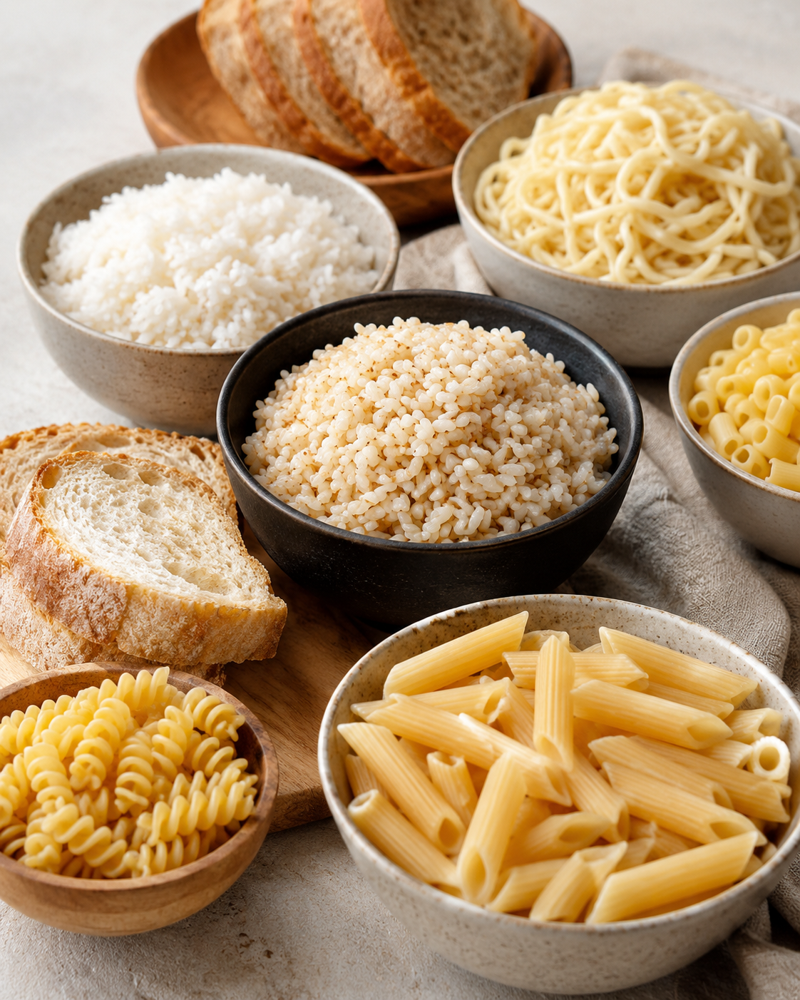
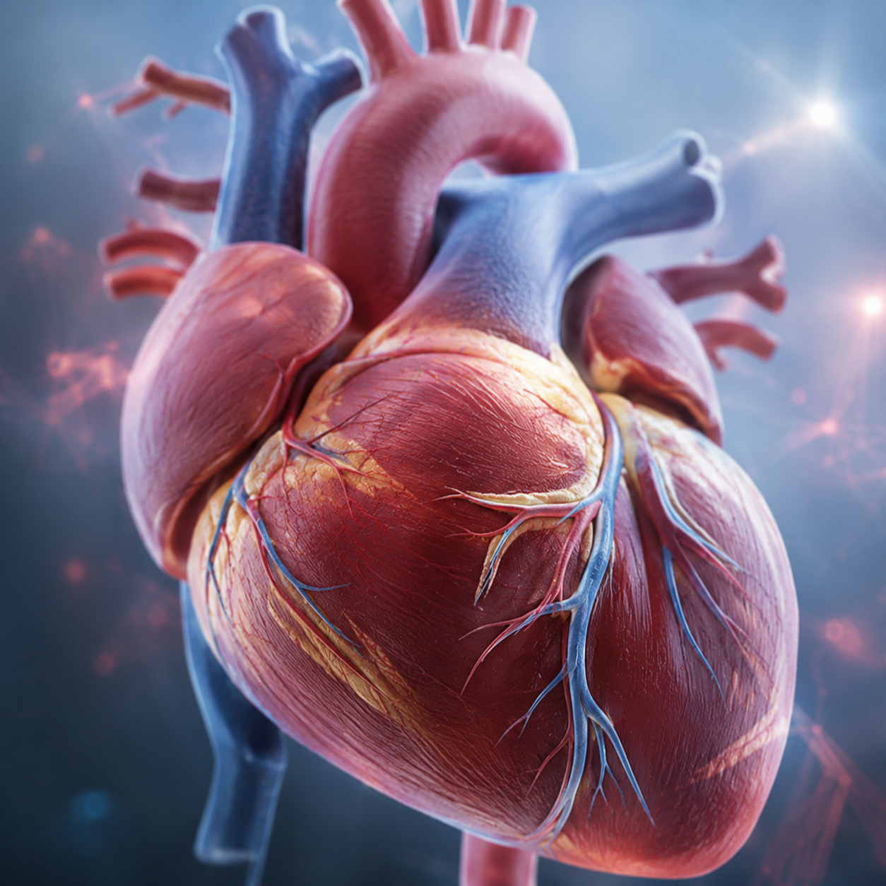
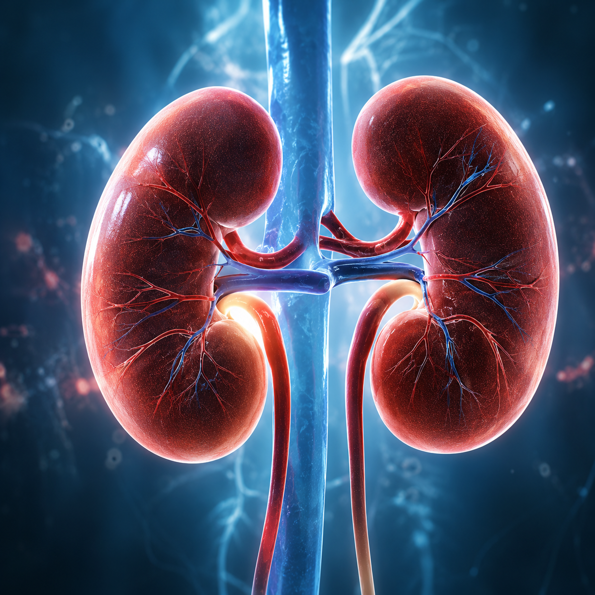
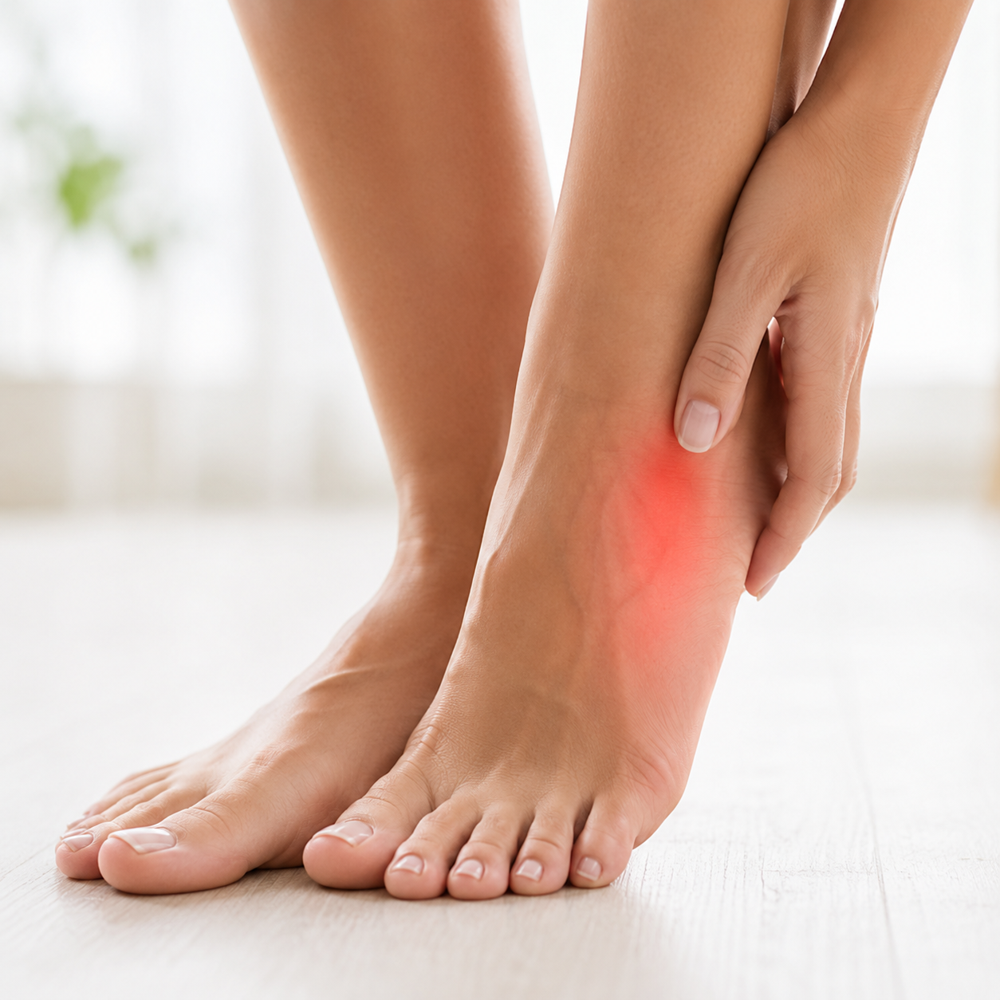
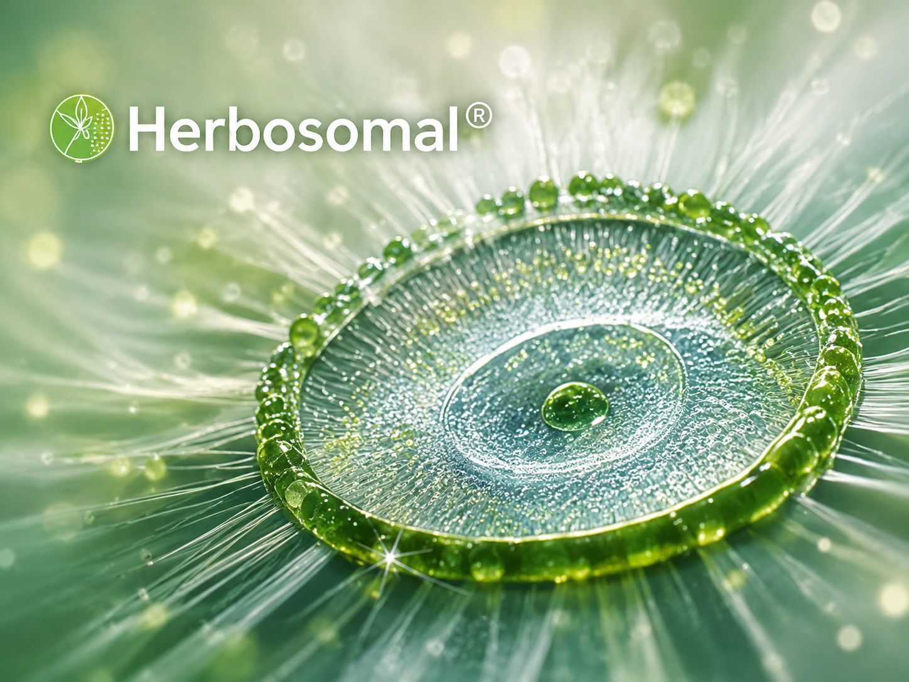

適合人群
不少日常飲食及生活習慣，都可能令餐後血糖狀態出現較大波動。
飲奶茶或甜品後精神下降

空腹或餐後血糖偏高
戒口後血糖狀態仍然反覆

HbA1c未如理想

經常高碳水飲食
血糖問題數據
香港15至84歲人士的糖尿病總患病率
在香港面對糖尿病問題
沒有自報病史，但檢測發現血糖升高
患有糖尿病
資料參考：香港衞生署人口健康調查及International Diabetes Federation。
高血糖可能引起的併發症
長期血糖管理不理想，可能影響身體不同部位的健康。

心血管
增加心臟病及中風風險
眼睛
可能影響視網膜及視力

腎臟
可能增加腎功能受損風險
神經
可能出現手腳麻痺或感覺異常

足部
傷口可能較難癒合
日常狀態
可能出現疲累、口渴及頻密小便等情況
及早留意、定期檢查及配合專業醫療建議，是管理血糖的重要部分。
成分 / 專利技術
InSea²® 海藻專利
由褐藻及紅藻來源成分組成，適合配合含碳水化合物的日常飲食，支援餐後碳水管理。
19種精選草本
結合白苦瓜、白芸豆、肌醇、Barberry、藤黃果及其他精選草本，提供多方面的日常代謝支援。

Herbosomal® 專利技術
專業草本傳送技術，支援草本成分在配方中的吸收及利用表現。
認證與品質
精選植物來源配方
衛生方便，容易攜帶
香港團隊一對一解答
Video
真實見證
每個人的身體狀況、飲食及生活習慣不同，實際體驗可能有所差異。
個人體驗因人而異，以上內容不代表所有使用者均會獲得相同結果。
選擇適合你的管理配套
按照個人需要，選擇適合的日常管理方案。
由今日開始，管理每一餐後的血糖狀態
每日一包Kura Mynis，建立更有系統的日常管理習慣。